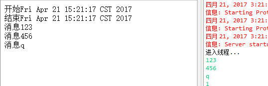

从Servlet3.0开始，Tomcat的Servlet支持异步请求，或者说是Tomcat提供了异步Servlet，从而可以将一些耗时的操作放到独立的线程中，在 操作完成后再返回数据，不阻塞请求的执行和返回 ，甚至可以基于此实现服务器推 的功能。
使用
-
手动开启异步处理支持
1.在web.xml配置 <async-supported>true</async-supported> 2.或者使用注解 @WebServlet(asyncSupported = true)注意如果有过滤器，那么过滤器也要开启异步
-
使用request获取异步Context对象
AsyncContext ctx = req.startAsync(req, resp); ctx.setTimeout(5000); new Thread(new Executor(ctx)).start(); -
在独立线程处理业务
一般可以通过线程的构造方法把Context对象传递进来，调用getRequest，和getResponse方法来获取请求对象，complete来响应完成
需要注意的是，异步Servlet有对应的超时时间，如果在指定的时间内没有执行完操作，response依然会走原来Servlet的结束逻辑，后续的异步操作执行完再写回的时候，可能会遇到异常。
和线程的区别
对于一些比较耗时的操作，为了不阻塞输出会开一个线程，在线程里面处理耗时的操作
但是AsyncContext实际上不是让你异步，而是让你同步输出(所以浏览器一直是处于加载状态直到线程结束)，但是解放服务器端的线程使用，使用AsyncContext的时候，对于浏览器来说，他们是同步在等待输出的，但是对于服务器端来说，处理此请求的线程并没有卡在那里等待，则是把当前的处理转为线程池处理了，关键就在于线程池，服务器端会起一个线程池去服务那些需要异步处理的请求，而如果你自己每次请求去起一个线程处理的话，这就有可能会耗大量的线程。
Demo
比如这个例子，在控制台的输入会同步到浏览器，所以把处理时间加长一点就可以模拟推送了
public class Service_1 extends HttpServlet{
private static final long serialVersionUID = 1L;
@Override
protected void service(HttpServletRequest req, HttpServletResponse resp) throws ServletException, IOException {
req.setCharacterEncoding("utf-8");
resp.setCharacterEncoding("utf-8");
resp.setContentType("text/html;charset=UTF-8");
PrintWriter out = resp.getWriter();
out.println("开始"+new Date().toString()+"<br>");
out.flush();
AsyncContext ctx = req.startAsync(req, resp);
ctx.setTimeout(9999999);
ctx.addListener(new AsyncListener() {
@Override
public void onTimeout(AsyncEvent arg0) throws IOException {
// TODO Auto-generated method stub
}
@Override
public void onStartAsync(AsyncEvent arg0) throws IOException {
// TODO Auto-generated method stub
}
@Override
public void onError(AsyncEvent arg0) throws IOException {
// TODO Auto-generated method stub
}
@Override
public void onComplete(AsyncEvent arg0) throws IOException {
// TODO Auto-generated method stub
}
});
new Thread(new Executor(ctx)).start();
out.println("结束"+new Date().toString()+"<br>");
out.flush();
}
public class Executor implements Runnable{
private AsyncContext ctx = null;
public Executor() {
}
public Executor(AsyncContext ctx) {
this.ctx = ctx;
}
@Override
public void run() {
try {
System.out.println("进入线程...");
Scanner in = new Scanner(System.in);
while(true){
String s = in.nextLine();
if (s.equals("q")) {
ctx.complete();
}
PrintWriter out = ctx.getResponse().getWriter();
out.println("消息"+s+"<br>");
out.flush();
}
} catch (IOException e) {
e.printStackTrace();
}
}
}
}
效果图
